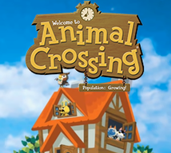

Animal crossing have a long history of games. Here the list of all the opus of this license:
Animal crossing
Date : 2001
Released in Japan for the nintendo 64

Animal crossing or know as Dobutsu no mori is a very famous japanese simulation game. This page allow you to know better this video game and how it was create !
Animal crossing was created by Katsuya Eguchi and Hisashi Nogami, two game designer that works for Nintendo. Nintendo develop games in portable and home console, like the nintendo DS, WII and recently the SWITCH.


It all started with cherishing those that you love ! Katsuya came up with the idea to create a game that allow him to keep contact with his family even if they are miles away. Like this in animal crossing you can play with people all around the world and work all together to move on the game.
Animal crossing have a long history of games. Here the list of all the opus of this license:
Date : 2001
Released in Japan for the nintendo 64
Date : 2005
Released for the nintendo DS
Date : 2008
Released for the Wii
Date : 2012
Released for the nintendo 3DS
Date : 2020
Released for the nintendo Switch
In the game we take on the role of a human character who moves into a new town. The city is populated with anthropomorphic animals who live there indefinitely. The gameplay is an open world, which means that you don't have a structured story or objectives, but you are encouraged to spend a lot of time creating new furniture, chatting with villagers and building the perfect house. Thanks the video game console's internal clock and calendar, Animal Crossing is played in real time! Have fun creating the perfect world for you and your villagers !